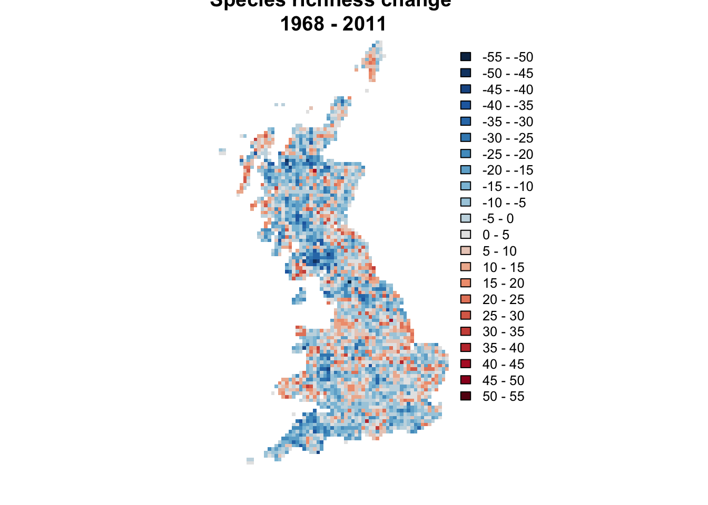
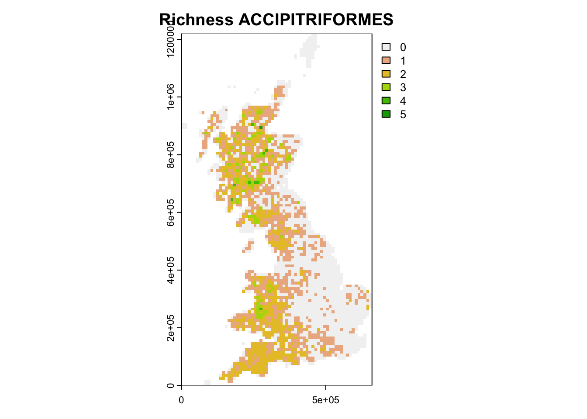
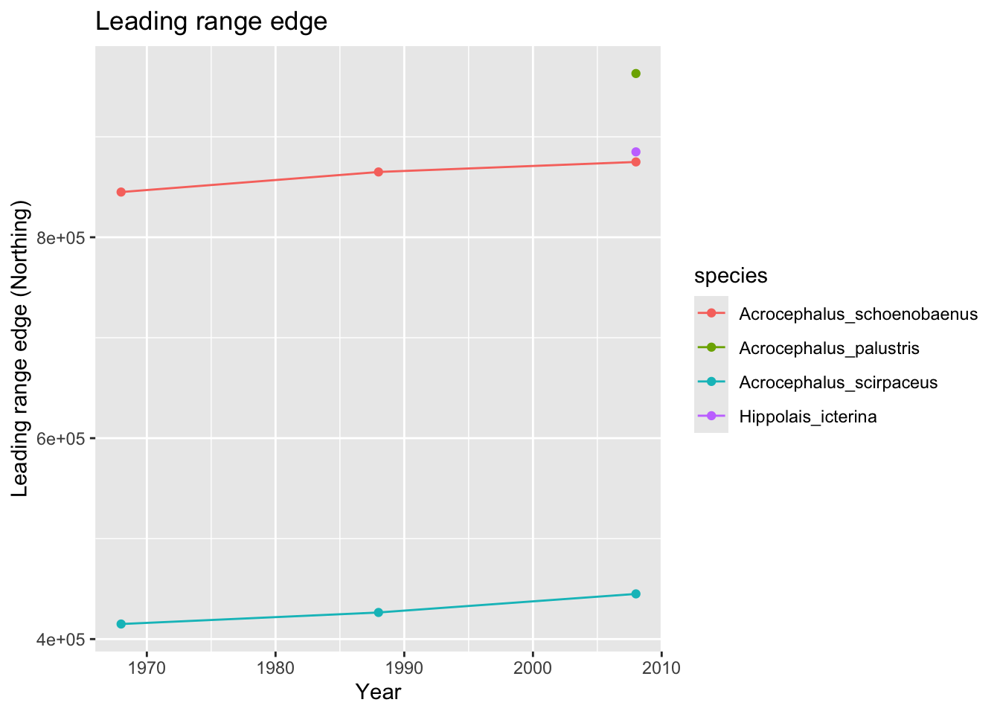
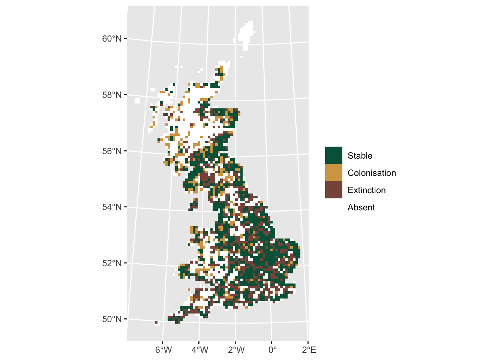

Analysing biodiversity changes
RStudio project
Open the RStudio project that we created in the first session. I recommend to use this RStudio project for the entire course and within the RStudio project create separate R scripts for each session.
- Create a new empty R script by going to the tab “File”, select “New File” and then “R script”
- In the new R script, type
# Session a6: Analysing biodiversity changesand save the file in your folder “scripts” within your project folder, e.g. as “a6_BiodivChanges.R”
In this session, we aim to analyse species range shifts and species richness changes in UK breeding birds over 40 years. As in previous sessions, analyses will be based on a dataset of British breeding and wintering birds recently made available by Gillings et al. (2019). Here, we will concentrate on bird records from Britain at 10 km resolution and during the breeding season. Records are available from three different time periods in 20-year cycles (1968-1972, 1988-1991, 2008-2011). The original data are available through the British Trust of Ornithology (www.bto.org; direct download here). To simplify matters, I have already filtered the data to contain only the relevant breeding records. These cleaned data are available here. Please download the data and save them in an appropriate folder (e.g. in data folder).
# Read in the distribution dataset:
bird_dist <- read.table('data/UK_BBatlas_1968_2008.csv',header=T, sep=',', stringsAsFactors = F)
# Look at data, the first three columns contain coordinate information, the 4th column contains the time periods:
head(bird_dist[,1:20])## grid EASTING NORTHING period Gavia_stellata Gavia_arctica
## 1 HP40 445000 1205000 1968-72 1 0
## 2 HP40 445000 1205000 1988-91 1 0
## 3 HP40 445000 1205000 2008-11 0 0
## 4 HP50 455000 1205000 1988-91 1 0
## 5 HP50 455000 1205000 2008-11 1 0
## 6 HP50 455000 1205000 1968-72 1 0
## Tachybaptus_ruficollis Podiceps_cristatus Podiceps_nigricollis
## 1 0 0 0
## 2 0 0 0
## 3 0 0 0
## 4 0 0 0
## 5 0 0 0
## 6 0 0 0
## Fulmarus_glacialis Puffinus_puffinus Hydrobates_pelagicus
## 1 1 0 0
## 2 1 0 0
## 3 1 0 1
## 4 1 0 0
## 5 1 0 0
## 6 1 0 0
## Oceanodroma_leucorhoa Morus_bassanus Phalacrocorax_carbo
## 1 0 0 0
## 2 0 0 0
## 3 1 0 0
## 4 0 0 0
## 5 0 0 0
## 6 0 0 0
## Phalacrocorax_aristotelis Botaurus_stellaris Ixobrychus_minutus
## 1 1 0 0
## 2 1 0 0
## 3 1 0 0
## 4 1 0 0
## 5 1 0 0
## 6 1 0 0
## Egretta_garzetta Ardea_cinerea
## 1 0 0
## 2 0 0
## 3 0 0
## 4 0 0
## 5 0 0
## 6 0 0# Species names are contained in the remaining columns:
spp <- names(bird_dist)[-c(1:4)]
spp_names <- sub('_',' ',spp)1 Species richness changes
First, we analyse how species richness has changed between different time periods. For this, we first need to compute species richness per time period.
library(terra)## terra 1.7.39# The coordinate reference system for the UK National Grid is:
proj_UK <- '+proj=tmerc +lat_0=49 +lon_0=-2 +k=0.9996012717 +x_0=400000 +y_0=-100000 +ellps=airy +datum=OSGB36 +units=m +no_defs'
# Extract species occurrences per time period and compute species richness:
birds_68 <- subset(bird_dist,period=='1968-72')
birds_68$richness68 <- rowSums(birds_68[,spp])
plot(terra::rast(birds_68[,c('EASTING','NORTHING','richness68')], crs=proj_UK, type='xyz'))
We can make seperate species richness data frames as above, or continue working with the original data frame and simply add a column for species richness. In the latter case, we will have to subset the data for mapping.
library(tidyterra)##
## Attaching package: 'tidyterra'## The following object is masked from 'package:stats':
##
## filterlibrary(ggplot2)
# Calculate species richness
bird_dist$richness <- rowSums(bird_dist[,spp])
# Map species richness for different time periods
richness_maps <- c(
terra::rast(subset(bird_dist,period=='1968-72')[,c('EASTING','NORTHING','richness')], crs=proj_UK, type='xyz'),
terra::rast(subset(bird_dist,period=='1988-91')[,c('EASTING','NORTHING','richness')], crs=proj_UK, type='xyz'),
terra::rast(subset(bird_dist,period=='2008-11')[,c('EASTING','NORTHING','richness')], crs=proj_UK, type='xyz'))
names(richness_maps) <- c("richness 1968-72", "richness 1988-91", "richness 2008-11")
ggplot() +
geom_spatraster(data = richness_maps) +
facet_wrap(~lyr, ncol = 3) +
scale_fill_whitebox_c(
palette = "muted"
) +
labs(fill = "Richness")2 Mapping species richness changes
Next, we plot the species richness differences. For this, we define an own colour palette.
# Define axis for colour breaks
brks.diff <- seq(-50,50,by=5)
# Define colour palette
cols.diff = colorRampPalette(
rev(c('#650A13','#b2182b','#d6604d','#f4a582','grey90','#92c5de','#4393c3','#2166ac','#0B2F52')))(21) # red-blue divergingNow, we produce a raster that shows the difference in species
richness between two periods and call this change_richness.
Then we use our new colour palette for mapping the differences:
# Calculate the difference in species richness between 1968 and 2011
change_richness <- terra::rast(subset(bird_dist,period=='2008-11')[,c('EASTING','NORTHING','richness')], crs=proj_UK, type='xyz') -
terra::rast(subset(bird_dist,period=='1968-72')[,c('EASTING','NORTHING','richness')], type='xyz')
# Plot the species richness change between 1968 and 2011
plot(change_richness, axes=F, col=cols.diff, breaks=brks.diff,
main='Species richness change \n1968 - 2011')
Test it yourself
- Map the changes in species richness between the different time periods. Interpret.
2.1 Mapping taxon-specific species richness changes
Sometimes, we are interested how specific species groups, for example families or orders, are responding to global change. The classification into family and order was provided in the red list status table from the previous session:
redlist_status <- read.table('data/UK_birds_redlist_status.csv', header=T, sep=',')# Restrict red list table to those species that are found in UK:
redlist_status <- subset(redlist_status, scientific_name %in% spp_names)
# List number of bird species in different orders:
table(redlist_status$order)##
## ACCIPITRIFORMES ANSERIFORMES CAPRIMULGIFORMES CHARADRIIFORMES
## 9 35 2 33
## COLUMBIFORMES CORACIIFORMES CUCULIFORMES FALCONIFORMES
## 5 1 1 4
## GALLIFORMES GAVIIFORMES GRUIFORMES PASSERIFORMES
## 11 2 5 79
## PELECANIFORMES PICIFORMES PODICIPEDIFORMES PROCELLARIIFORMES
## 6 3 3 3
## PSITTACIFORMES STRIGIFORMES SULIFORMES
## 1 6 2# List number of bird species in different families:
table(redlist_status$family)##
## ACCIPITRIDAE ACROCEPHALIDAE AEGITHALIDAE ALAUDIDAE
## 8 4 1 2
## ALCEDINIDAE ALCIDAE ANATIDAE APODIDAE
## 1 4 35 1
## ARDEIDAE BURHINIDAE CALCARIIDAE CAPRIMULGIDAE
## 5 1 1 1
## CERTHIIDAE CHARADRIIDAE CINCLIDAE CISTICOLIDAE
## 2 4 1 1
## COLUMBIDAE CORVIDAE CUCULIDAE EMBERIZIDAE
## 5 6 1 4
## FALCONIDAE FRINGILLIDAE GAVIIDAE HAEMATOPODIDAE
## 4 10 2 1
## HIRUNDINIDAE HYDROBATIDAE LARIDAE LOCUSTELLIDAE
## 3 1 11 2
## MOTACILLIDAE MUSCICAPIDAE NUMIDIDAE ORIOLIDAE
## 6 8 1 1
## PANDIONIDAE PANURIDAE PARIDAE PASSERIDAE
## 1 1 6 2
## PHALACROCORACIDAE PHASIANIDAE PHYLLOSCOPIDAE PICIDAE
## 1 10 3 3
## PODICIPEDIDAE PROCELLARIIDAE PRUNELLIDAE PSITTACIDAE
## 3 2 1 1
## RALLIDAE RECURVIROSTRIDAE REGULIDAE SCOLOPACIDAE
## 5 2 2 9
## SCOTOCERCIDAE SITTIDAE STERCORARIIDAE STRIGIDAE
## 1 1 1 5
## STURNIDAE SULIDAE SYLVIIDAE THRESKIORNITHIDAE
## 1 1 2 1
## TROGLODYTIDAE TURDIDAE TYTONIDAE
## 1 6 1# List bird species in order ACCIPITRIFORMES:
subset(redlist_status,order=='ACCIPITRIFORMES')$scientific_name## [1] "Milvus milvus" "Circus aeruginosus" "Circus cyaneus"
## [4] "Accipiter gentilis" "Accipiter nisus" "Buteo buteo"
## [7] "Aquila chrysaetos" "Pandion haliaetus" "Parabuteo unicinctus"We can use the table to query the species belonging to a specific order or family, then extract these species from the distribution data, and compute and map species richness.
# Extract species belonging to the order ACCIPITRIFORMES:
accipiter_spp <- subset(redlist_status,order=='ACCIPITRIFORMES')$scientific_name
accipiter_spp <- sub(' ','_', accipiter_spp)
# Compute ACCIPITRIFORMES species richness
birds_68$sr_accipiter <- rowSums(birds_68[,accipiter_spp])
# Map ACCIPITRIFORMES species richness
plot(terra::rast(birds_68[,c('EASTING','NORTHING','sr_accipiter')], crs=proj_UK, type='xyz'), main="Richness ACCIPITRIFORMES")
Exercise:
- Pick a family or order (e.g. ACCIPITRIFORMES), map species richness in different time periods as well as the changes in species richness between these time periods. Interpret.
3 Change in species ranges
For many questions, it is also interesting to analyse global change impacts at the species level, to answer for example how many species are shifting northwards, or how many species have contracting or expanding ranges.
3.1 Quantifying species range changes
In the case of the gridded distribution data with equal-area grid cells, we can simply calculate range size difference by summing the number of cells. As example, we look at the sedge warbler (Acrocephalus schoenobaenus):
# range size in different time periods in km°2
(sedge_area68 <- sum(subset(bird_dist,period=='1968-72')[,'Acrocephalus_schoenobaenus'])*100) # each grid cell in 10*10 km of size## [1] 147600(sedge_area88 <- sum(subset(bird_dist,period=='1988-91')[,'Acrocephalus_schoenobaenus'])*100)## [1] 155400(sedge_area08 <- sum(subset(bird_dist,period=='2008-11')[,'Acrocephalus_schoenobaenus'])*100)## [1] 121300We can also compare the range size changes for all ACROCEPHALIDAE:
acrocepha_spp <- subset(redlist_status,family=='ACROCEPHALIDAE')$scientific_name
acrocepha_spp <- sub(' ','_', acrocepha_spp)
# Make data frame for storing the range sizes
acrocepha_rangesize <- data.frame(expand.grid(period=c('1968-72', '1988-91', '2008-11'), species=acrocepha_spp), rangesize=NA)
# Loop through all time periods and species to compute range size
for (t in c('1968-72', '1988-91', '2008-11')) {
for (sp in acrocepha_spp) {
rangesize <- sum(subset(bird_dist,period==t)[,sp])*100
acrocepha_rangesize[acrocepha_rangesize$period==t & acrocepha_rangesize$species==sp, 'rangesize'] <- rangesize
}
}
# plot changes in range size
ggplot(data = acrocepha_rangesize, mapping = aes(x = rep(c(1968,1988,2008), length(acrocepha_spp)), y = log(rangesize), color=species)) + geom_line() + geom_point() + xlab('Year') + ylab('log(Range size [km^2])')We can also look at positions of range centres or boundaries. For simplicity, let’s analyses only the latitudinal (south-north) shifts.
# Make data frame for storing the range positions
acrocepha_rangelimits <- data.frame(expand.grid(period=c('1968-72', '1988-91', '2008-11'), species=acrocepha_spp), rangecentre=NA, leading_edge=NA)
# Loop through all time periods and species to compute range size
for (t in c('1968-72', '1988-91', '2008-11')) {
for (sp in acrocepha_spp) {
# range centre
rangecentre <- mean(subset(bird_dist[bird_dist[,sp]==1,], period==t)[,'NORTHING'], na.rm=T)
acrocepha_rangelimits[acrocepha_rangelimits$period==t & acrocepha_rangelimits$species==sp, 'rangecentre'] <- rangecentre
# leading edge
edge <- quantile(subset(bird_dist[bird_dist[,sp]==1,], period==t)[,'NORTHING'], 0.95)
acrocepha_rangelimits[acrocepha_rangelimits$period==t & acrocepha_rangelimits$species==sp, 'leading_edge'] <- edge
}
}
# plot changes in range positions
ggplot(data = acrocepha_rangelimits, mapping = aes(x = rep(c(1968,1988,2008), length(acrocepha_spp)), y = rangecentre, color=species)) + geom_line() + geom_point() + xlab('Year') + ylab('Range centre (Northing)') + ggtitle('Range centre')ggplot(data = acrocepha_rangelimits, mapping = aes(x = rep(c(1968,1988,2008),length(acrocepha_spp)), y = leading_edge, color=species)) + geom_line() + geom_point() + xlab('Year') + ylab('Leading range edge (Northing)') + ggtitle('Leading range edge')
Exercise:
- Pick a bird family or order of your choice and quantify and plot the change in range sizes and range positions over time. Interpret.
3.2 Mapping species range changes
At the species level, we can analyse how species ranges shift over time and whether ranges are contracting or expanding. As an example, let’s continue analysing range changes in the sedge warbler (Acrocephalus schoenobaenus):
# ranges sedge warbler
sedge_68 <- terra::rast(subset(bird_dist,period=='1968-72')[,c('EASTING','NORTHING','Acrocephalus_schoenobaenus')], crs=proj_UK, type='xyz')
sedge_88 <- terra::rast(subset(bird_dist,period=='1988-91')[,c('EASTING','NORTHING','Acrocephalus_schoenobaenus')], crs=proj_UK, type='xyz')
sedge_08 <- terra::rast(subset(bird_dist,period=='2008-11')[,c('EASTING','NORTHING','Acrocephalus_schoenobaenus')], crs=proj_UK, type='xyz')
# stack the SpatRasters
ranges_sedge <- c(sedge_68, sedge_88, sedge_08)
names(ranges_sedge) <- c("Sedge warbler 1968-72", "Sedge warbler 1988-91", "Sedge warbler 2008-11")
# Plot the range in different time periods
ggplot() +
geom_spatraster(data = ranges_sedge) +
facet_wrap(~lyr, ncol = 3) +
scale_fill_whitebox_c(
direction=-1,
guide = guide_legend(reverse = TRUE),
n.breaks=2
) +
labs(fill = "Presence")Now, we want to visualise where the range remained stable, and where
cells were colonised or decolonised. The distribution data are binary
containing 0 and 1. For easy mapping, we apply
a little trick and recode all 1 in the more recent data set
as 2. That way, we can sum up the maps and get distinct
codes for absence, extinction, colonisation, and stable occurrences:
| Time period 2 | |||
| 0 | 2 | ||
| Time period 1 | 0 | 0 = absent | 2 = colonisation |
| 1 | 1 = extinction | 3 = stable |
# Compute differences. To distinguish clearly where cells are colonised or decolonised, we assign occurrences in 1968 a value=1 and occurrence in 2008 a value=2:
dummy <- sedge_08
values(dummy)[values(dummy)>0 & !is.na(values(dummy))] <- 2
# Sum up the layers. Values=1 indicate presence in 1968, values=2 presence in 2008, values=3 presence in both periods
diff <- sedge_68+dummy
ggplot() +
geom_spatraster(data = diff) +
scale_fill_whitebox_c(
direction = -1,
guide = guide_legend(reverse = TRUE),
n.breaks=4,
labels = c("Absent", "Extinction", "Colonisation", "Stable")
) +
labs(fill = "")
Test it yourself
- Map the range changes across all time periods. Interpret.
Exercise:
- Pick another species and map range changes. Interpret.